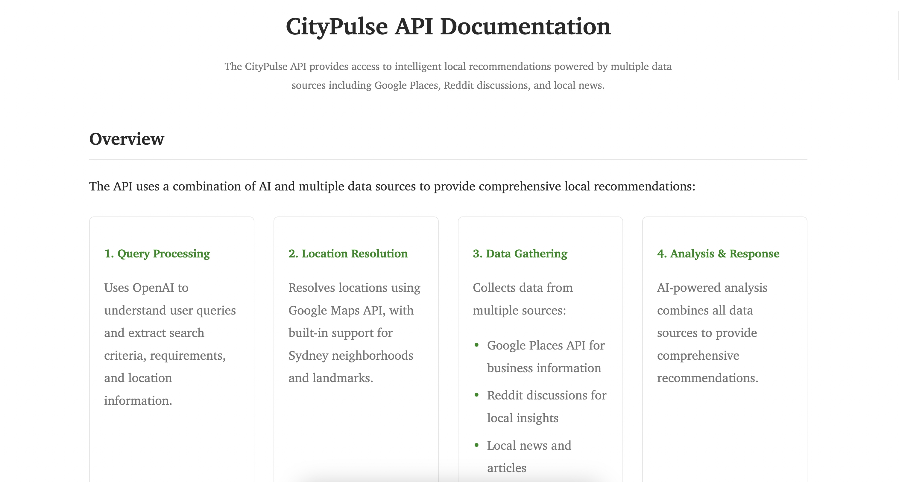
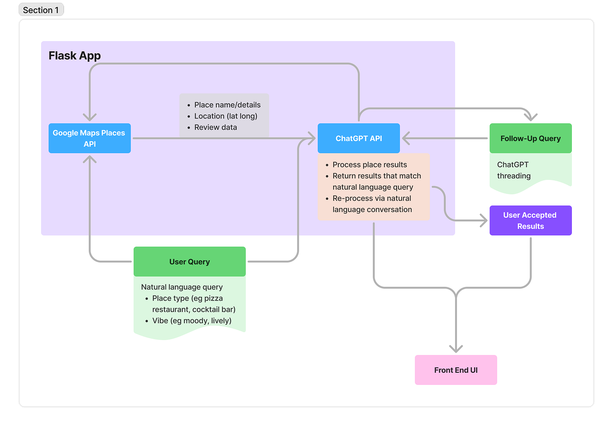
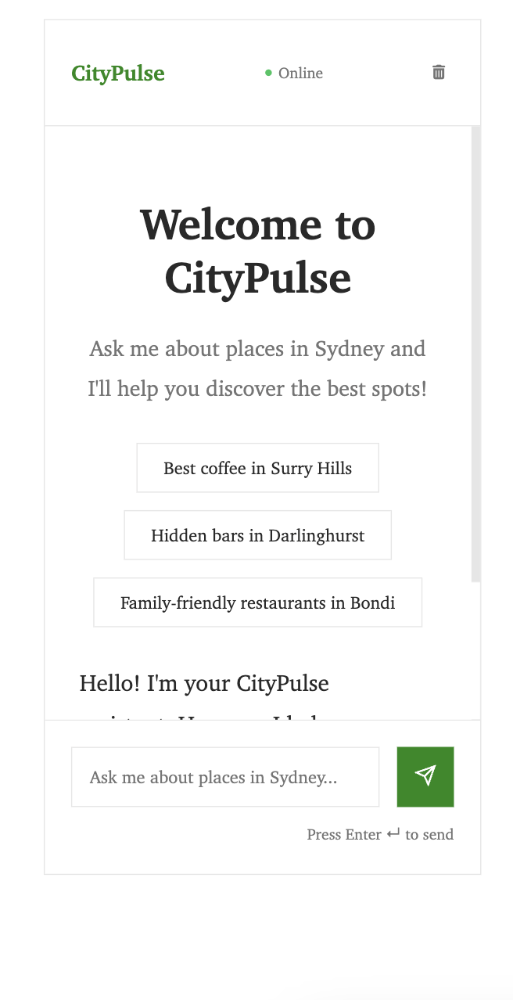

CityPulse
AI-driven urban exploration through natural language conversation
AI-driven urban exploration through natural language conversation
CityPulse is an innovative web application that transforms how we explore and understand urban environments. By combining the power of ChatGPT's natural language processing with Google Maps data and web-scraped insights, it creates a uniquely intuitive way to discover and analyze city spaces.
Users can interact with CityPulse through natural language queries, making complex urban exploration as simple as having a conversation. Whether you're looking for specific amenities or conducting urban research, CityPulse provides rich, multi-source perspectives on city spaces.
The backend is built with Flask, providing a robust foundation for managing the complex interactions between various APIs and data sources. The application processes natural language queries through ChatGPT, which parses them into structured search parameters for the Google Maps Places API and web scraping modules.
The frontend features an interactive Google Maps visualization, built with HTML, CSS, and JavaScript. This interface allows users to see their search results in context while maintaining the ability to refine their queries through natural conversation.



CityPulse serves both casual users and urban researchers:
Future updates will focus on expanding data sources, improving sentiment analysis, and adding more sophisticated visualization options. We're also exploring the integration of real-time transit data and environmental sensors to provide even richer urban insights.